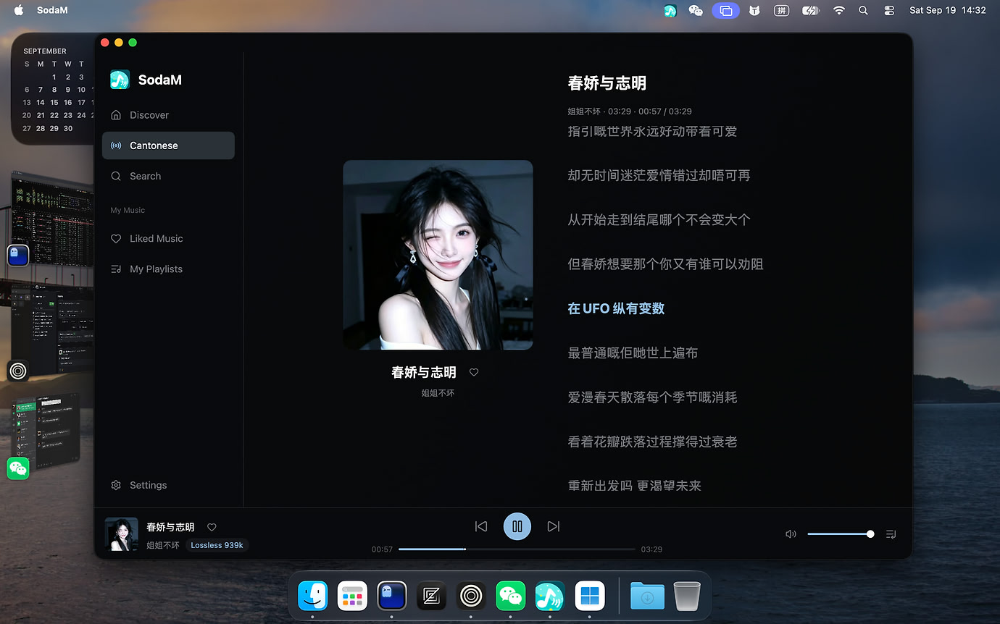
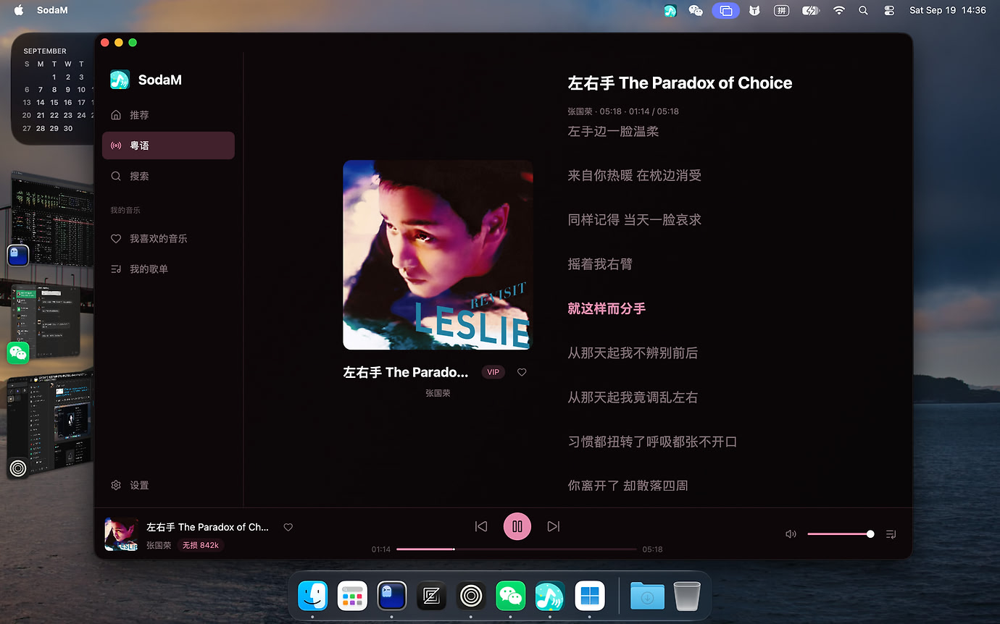

把汽水音乐搬到桌面上
SodaM 是基于 GPUI + Rust 的原生汽水音乐客户端：接近官方客户端的操作手感、 本地缓存与无损播放、干净的深色主题，Linux / macOS / Windows 都能用。
界面
原生渲染、跟随系统主题，封面与歌词都是为桌面优化的布局。


特性
日常听歌真正用得上的那几件事。
原生
GPUI 渲染，不是套壳网页
Rust + GPUI 直接调用系统窗口与 GPU，滚动、动画和输入法都是原生手感。
播放
无损音质与本地缓存
解密后的音频落本地缓存，可设上限自动淘汰；切歌不再等网络，弱网也稳。
跟随系统
切换输出设备自动跟随
播放中把默认输出从音响换成耳机，2 秒内切过去并从原位置续播，不用重启。
功能
推荐流 · 听歌模式 · 搜索
推荐流、场景电台、搜索、歌单、我喜欢的音乐、艺人/专辑页在桌面端都能用。
媒体集成
系统媒体键与桌面挂件
MPRIS（Linux）、macOS Now Playing、Windows SMTC 都已接入，键位和挂件直接可控。
体积
轻量、无守护进程
单进程应用，关窗后驻留托盘；没有额外服务、后台常驻进程或遥测。
30 秒装好
Arch Linux（含 Arch Linux ARM）可以直接加源，之后随 pacman -Syu 升级。
[sodam] SigLevel = Optional TrustAll Server = https://sodahub-org.github.io/sodam/$arch
sudo pacman -Sy sodam
brew install --cask sodahub-org/tap/sodam
不想自己动手？把 「让 AI 帮我装」 页面的说明复制给你的 AI 助手，
它会先判断你的系统，再一步步带你装好。